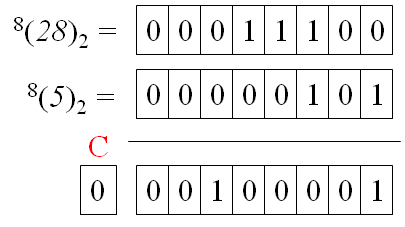
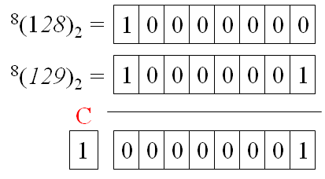
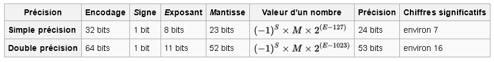
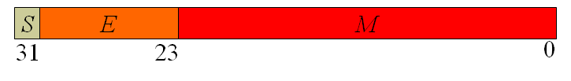

Numération et algorithmique
Introduction et notions de représentation de nombres
Cours Magistral 2/7


Table of Contents
Retours du CM1
Questions sur le contenu ?

Retour exercice plaque immatriculation
On a vu que $N = (23^2-1)\times 1000\times (23^2-2)$. Sachant qu’il y avait environ 37 millions de véhicules immatriculés en 2009 et qu’il y a environ 3 millions de nouvelles immatriculations chaque année, quelle est la durée approximative de ce codage ?
Conversion de base $10$ à base $B$
Exemple avec $N_{10} = 783$ :
- $783 = 2 \times 391 + 1$
- $391 = 2 \times 195 + 1$
- $195 = 2 \times 94 + 1$
- $97 = 2 \times 48 + 1$
- $48 = 2 \times 24 + 0$
- $24 = 2 \times 12 + 0$
- $12 = 2 \times 6 + 0$
- $6 = 2 \times 3 + 0$
- $3 = 2 \times 1 + 1$
- $1 = 2 \times 0 + 1$
$N_2 = 1100001111$
Opérations sur les nombres en machine: Addition

Principe d'addition en base $B$
D’une manière générale, dans une base quelconque, l’addition s’effectue dans la base, chiffres par chiffres, en commençant par le chiffre de plus faible poids et en propageant la retenue. On notera $+_B$, l’addition dans la base $B$.
- $81_{10}+_{10}89_{10}=170_{170}$
- $81_{16} +_{16} 89_{16} = 10A_{16}$
- $00101_{2} +_{2} 01110_{2} = 10011_{2}$
Problème du débordement en programmation !
Principe du débordement (1/2)
Soient $U = 28$ et $V=5$ représentés sur $8$ bits: Principe du débordement (2/2)
Soient $U = 128$ et $V=129$ représentés sur $8$ bits: Conséquences du débordement: le cas Ariane...
Nombres signés

Nombre signés
Jusque maintenant, nos avons considéré des nombres non-signés (cad positifs). On peut se poser la question de comment représenter les nombres signés
Imaginons que je veux représenter $N=-5$, comment obtenir un code qui le différentie de $M=5$ ?
Une solution imparfaite
Idée :On utilise un bit supplémentaire pour coder le signe !Exemple :
- $^8(5_{10})_2 = $ $0$ $0000$ $0101_2$
- $^8(-5_{10})_2 = $ $1$ $0000$ $0101_2$
→ Quels sont les inconvénients de cette approche ?
- Un bit supplémentaire nécéssaire
- Addition ne se fait pas naturellement : $^8(5_{10} + -5_{10})_2 = 0$ $0000$ $0000_2$, mais$^8(5_{10})_2$ + $^8(-5_{10})_2 = $ $1$ $0000$ $1010_2$.
Le code complément
Considérons que nous disposons de 4 bits, soit 16 codes possibles. On réserve la moitié des codes pour les nombres positifs en utilisant la fonction de codage des nombres entiers non signés soit $^4(N_{10})_2$.Quels avantages ?
- Les nombres positifs vont donc de $0$ à $7$.
- Les 8 codes restants sont utilisés pour représenter les nombres strictement négatifs. On ira donc de -8 à -1.
- Une représentation pour le $0$.
- Addition naturelle conservée... grâce au débordement
Exemple pratique en base $B=10$
Considérons des nombres écrits sur $4$ chiffres en base $10$ :
- le nombre 0 s’écrit 0000
- le nombre 3 s’écrit 0003
- le plus grand nombre positif représentable est 4999 qui s’écrit 4999.
Soit $^4(3_{10})$, comment obtenir $^4(-3_{10})$ ?
→ Il faut résoudre l'équation : $^4(3) + {^4(-3)} = {^4(0)}$
→ Soit ${^4(-3)}=9997$
Exercice :
- Dans une représentation en base 2 sur 8 bits, donner le code de 3 puis le code de -3.
- Dans une représentation en base 4 sur 3 chiffres, donner le code de 3 puis de -3.
De manière générale : $^P(-N)_B = {^P(B^P - N)_B}$
Obtenir le code de l'opposé en pratique : le complément
Exemple en base 2 :Chiffre : Soit $x_B$ un chiffre en base $B$, on définit son complément à la base $B$ avec la notation $x_B^*$ par: $x_B +_B x^*_B = (B - 1)_B$
Nombre : Soit $^P(N)_B=x_{n-1}\dots x_{0}$ en base $B$ sur $P$ chiffres. On définit le complément à la base $B$ par : $^P(N)_B^* = x_{n-1}^*\dots x_{0}^*$
- Code complément de $^8(5_{10})_2$ ?
- En déduire comment obtenir l'opposé en base 2 rapidement
$^P(-N)_B = {^P(N)_B^*} +_B 1$
Exercice à la maison
- Calculer le code de $-128$ en base $2$ sur $8$ bits.
- Calculer le code de $-3$ en base $16$ sur $4$ chiffres.
- Si $X$ est la conversion d'un nombre négatif, c'est-à-dire $X = ^P(-N)_B=^P(N)_B^* +_B $, que vaut $X^* +_B 1$ ? Vérifier le résultat sur la question précédente.
Nombres flottants

Nombre à virgule en base $B$
Soit $N_B=x_n\dots x_1x_0.x_{-1}\dots x_{-m}$, on a : $(N_B)_{10}=\displaystyle\sum_{k=-m}^{n}p_kB^k$ où $p_k$ est le poids de $x_k$ dans la base $B$.Exemple d'un nombre en base 10 : Exemple d'un nombre en base 2 : Exemple d'un nombre en base 16 :
Format IEEE 754
Format le plus couremment utilisé:  → Géré par la pluspart des processeurs pour faire des calculs. En simple précision, ce qui est codé dans la machine : Nombres flottants

Représentation ASCII
Acronyme pour American Standard Code for Information Interchange. On code les caractères avec un code sur 7 bits :
ASCII chart from a pre-1972 printer manual @Wikipedia
En pratique

Types natifs en pythons
- Booléens : bool
- Nombre entiers signés : int
- Nombre flottants : float (double précision)
- Chaines de caractères (séquence de codes pour chaque lettre): str